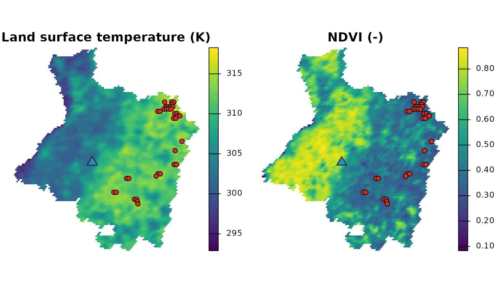
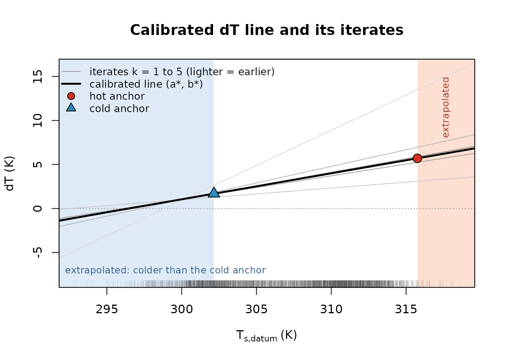
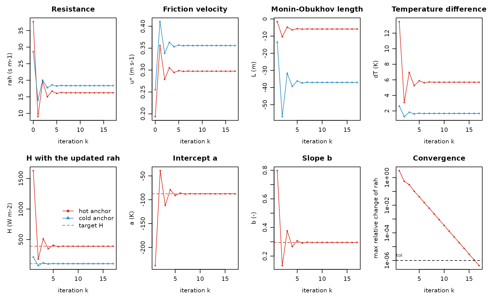
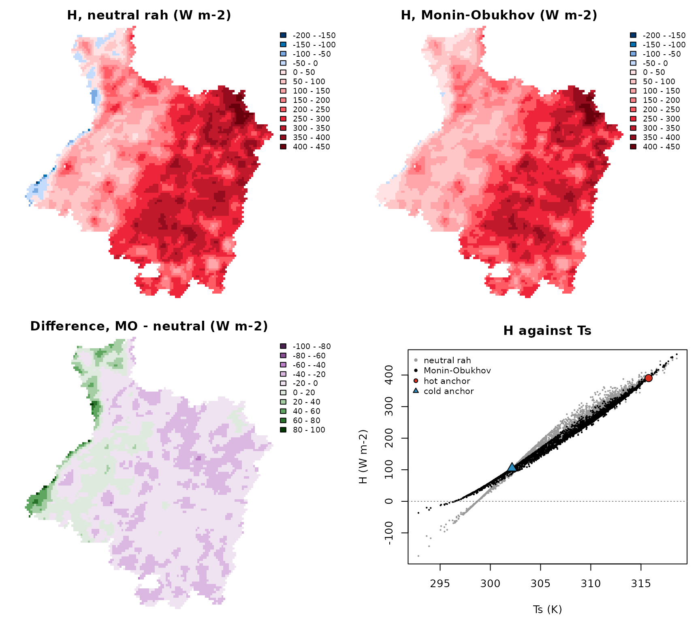
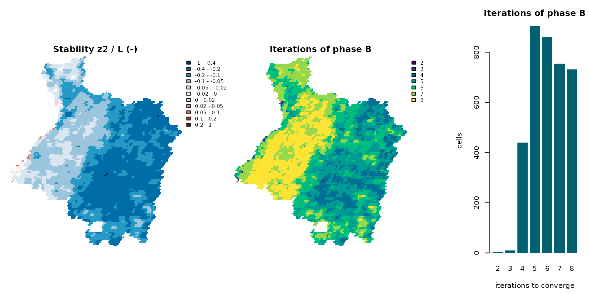

Hot and cold anchors and the Monin–Obukhov iteration
Source:vignettes/articles/anchors-monin-obukhov.Rmd
anchors-monin-obukhov.RmdA Spanish version of this article, for teaching, is available: Píxeles ancla y la iteración de Monin–Obukhov.
The sensible heat flux
is the hardest term of a METRIC energy balance. This article explains,
step by step, how METRIC (Allen et al., 2007) estimates it: the internal
calibration with a hot and a cold anchor pixel, and the Monin–Obukhov
iteration that corrects the aerodynamic resistance for atmospheric
stability. Every equation is run on the packaged MODIS scene of the
Cauquenes province (14 February 2019, see the article Example scene: Cauquenes) with the
exported functions of EarthFlux, and the iteration is written out by
hand and checked against ef_calibrate_h().
Equation and page numbers refer to the SEBAL Idaho manual of the METRIC authors (Waters et al., 2002), against which the formulations of EarthFlux are verified.
Experimental and illustrative. EarthFlux is an experimental package and its results are not validated. The scene carries no weather data and no elevation model, so this article uses an illustrative hourly weather station and an illustrative uniform elevation (both made up for this article, though plausible for the place and the date). The numbers below show how the method works; they are not estimates of the fluxes of Cauquenes.
Everything below runs offline from the installed package.
1. Why H is hard
At the time of the satellite overpass, the latent heat flux is the residual of the surface energy balance (Waters et al., 2002, Eq. 1):
with the net radiation , the soil heat flux and the sensible heat flux , all in W m⁻². and follow, with known uncertainty, from the surface state (albedo, surface temperature, emissivity, vegetation indices) and the solar geometry. is transported by turbulence and is written as a bulk transfer equation (Waters et al., 2002, p. 25, Eq. 25):
where is the air density (kg m⁻³), J kg⁻¹ K⁻¹ the specific heat of air, the aerodynamic resistance to heat transport (s m⁻¹) between two heights above the zero-plane displacement, m and m, and the air temperature difference between those two heights (K).
The obvious shortcut, with the land surface temperature of the satellite and the air temperature of a weather station, does not work, for three reasons:
- Radiometric is not aerodynamic temperature. The satellite sees a radiometric temperature: a mixture of sunlit and shaded soil and leaves, weighted by the view angle and the emissivity. The temperature that drives the transfer of heat is an aerodynamic temperature at the apparent source of heat, inside the canopy. The two can differ by several kelvin, and the difference depends on the cover, which is exactly what varies across a scene.
- Errors of are of the size of . is only a few kelvin. An error of 1–2 K in (atmospheric correction, emissivity, view angle) is an error of tens of percent in .
- There is no air temperature per pixel. Stations are few, and even a dense network gives air temperature above a reference grass, not above each field.
How sensitive is to can be read from the factor (W m⁻² K⁻¹): with an air density near 1.15 kg m⁻³ and resistances of 10–50 s m⁻¹, every kelvin of is worth tens of W m⁻² of (the value at the cold anchor of the scene is computed in section 2).
2. Internal calibration with two anchors
The idea
METRIC, after SEBAL (Bastiaanssen et al., 1998), never measures . It assumes that, within one scene, is a linear function of the surface temperature (Waters et al., 2002, p. 30, Eq. 32):
and finds and from two pixels whose is known from their energy balance: the anchor pixels. Hot surfaces heat the air above them more, so . is the surface temperature referred to a common elevation (the datum), with a lapse rate (Waters et al., 2002, appendix 12, Eq. 12-7); in this article the elevation is uniform and , so . (The manual writes , with the slope; EarthFlux names the intercept and the slope .)
Because and are fitted inside the image, systematic errors of (a bias of the atmospheric correction, for example) are largely absorbed: depends on differences of , not on its absolute value. This is what “internalized calibration” means in the name of METRIC.
The two anchors (Waters et al., 2002, pp. 30–31, steps 5a and 5b) are:
- the cold anchor: well-watered agricultural vegetation with full ground cover, evaporating at 1.05 times the rate of the alfalfa reference (), so that with the latent heat of vaporization and the instantaneous alfalfa reference evapotranspiration expressed as a mass flux;
- the hot anchor: a dry, bare agricultural field where evaporation is zero (), so that all the available energy goes into :
For each anchor, the bulk transfer equation is inverted to give the that produces its (Waters et al., 2002, p. 30, Eq. 33):
and the two points fix the line:
The catch is that depends on the stability of the air, which depends on itself. That is the subject of section 3. First, the inputs.
The scene and an illustrative weather station
The surface state is the packaged scene, on its native 1 km sinusoidal grid. The numeric core of EarthFlux works on plain matrices, so the layers are read as matrices (one row of the grid per row of the matrix):
library(EarthFlux)
r <- terra::unwrap(cauquenes_modis)
as_mat <- function(name) terra::as.matrix(r[[name]], wide = TRUE)
lst <- as_mat("lst") # K
albedo <- as_mat("albedo") # -
ndvi <- as_mat("ndvi") # -
lai <- as_mat("lai") # m2 m-2
emissivity <- as_mat("emissivity") # -
utc_hour <- as_mat("utc_hour") # h, overpass time of each cell
doy <- as_mat("doy")
inside <- !is.na(as_mat("flags_lst")) # cells of the province
# Longitude and latitude of the cell centres (degrees)
lonlat <- terra::project(terra::xyFromCell(r, seq_len(terra::ncell(r))),
from = terra::crs(r), to = "EPSG:4326")
lon <- matrix(lonlat[, 1], terra::nrow(r), byrow = TRUE)
lat <- matrix(lonlat[, 2], terra::nrow(r), byrow = TRUE)
summary(as.vector(utc_hour))
#> Min. 1st Qu. Median Mean 3rd Qu. Max. NAs
#> 15.02 15.03 15.04 15.06 15.11 15.12 5885The overpass is at about 15:02 UTC (10:12 local mean solar time); every cell of the province was observed by the same Terra pass, between 15:01 and 15:07 UTC, at 12 to 18 degrees from nadir.
The scene has no elevation model. For this article
only, the elevation is set to a uniform 150 m, roughly the
elevation of the town of Cauquenes. This is the situation of the preset
"idaho2002_flat": no lapse rate
()
and one shortwave transmissivity for the scene.
z_scene <- 150 # m, illustrative, uniform
elevation <- ifelse(inside, z_scene, NA)
pressure <- ef_air_pressure(elevation) # kPaThe weather is an illustrative hourly weather station (values made up for this article, consistent with a clear summer morning in the interior of the province; they are not observations): air temperature, dew point, wind speed at 2 m over grass and solar radiation for the four hours around the overpass. From them, the hourly alfalfa reference evapotranspiration of the ASCE standardized equation (ASCE-EWRI, 2005):
station <- list(lon = -72.35, lat = -35.97, elevation = z_scene)
wx <- data.frame(
utc_start = 13:16, # hour 13:00-14:00 UTC, ...
air_temperature = c(19.0, 21.5, 24.0, 26.0), # degrees C
dewpoint = c(10.0, 10.0, 10.2, 10.2), # degrees C
wind_2m = c(1.8, 2.2, 2.6, 3.0), # m s-1
solar_radiation = c(2.10, 2.62, 2.98, 3.18) # MJ m-2 h-1
)
wx$utc_mid <- wx$utc_start + 0.5
deg <- pi / 180
ra <- ef_ra_period(lat = station$lat * deg, lon = station$lon * deg,
doy = 45, utc_mid = wx$utc_mid, period_hours = 1,
standard = "asce")
ea <- ef_ea_dewpoint(wx$dewpoint)
rn_ref <- ef_ref_net_radiation(
solar_radiation = wx$solar_radiation,
clear_sky_radiation = ef_rso(ra, station$elevation),
vapour_pressure = ea, air_temperature = wx$air_temperature,
timestep = "hourly", standard = "asce"
)$rn
daytime <- rn_ref > 0
g_ref <- ef_ref_soil_heat_flux(rn_ref, reference = "alfalfa",
timestep = "hourly", standard = "asce",
daytime = daytime)
wx$etr <- ef_ref_et(
net_radiation = rn_ref, soil_heat_flux = g_ref,
air_temperature = wx$air_temperature, wind_speed_2m = wx$wind_2m,
vapour_pressure_deficit = ef_es(wx$air_temperature) - ea,
slope = ef_es_slope(wx$air_temperature),
psychrometric = ef_psychrometric(ef_air_pressure(station$elevation)),
reference = "alfalfa", timestep = "hourly", standard = "asce",
daytime = daytime
)$et_ref
wx
#> utc_start air_temperature dewpoint wind_2m solar_radiation utc_mid etr
#> 1 13 19.0 10.0 1.8 2.10 13.5 0.4283063
#> 2 14 21.5 10.0 2.2 2.62 14.5 0.5857801
#> 3 15 24.0 10.2 2.6 2.98 15.5 0.7257824
#> 4 16 26.0 10.2 3.0 3.18 16.5 0.8347101As in the presets of earthflux(), each cell takes the
values at its own overpass time, by linear interpolation between the
mid-points of the hours:
Radiation, soil heat flux and roughness
The options are those of the preset "idaho2002_flat"
(see ef_preset("idaho2002_flat")), except that the weather
comes from the illustrative station above instead of a regionalized
forcing.
preset <- ef_preset("idaho2002_flat")Roughness of momentum from LAI, (Waters et al., 2002, p. 27, Eq. 31a), with the minimum of 0.005 m of the preset, and the wind speed at the blending height m, extrapolated from the station with a logarithmic profile over its grass (Waters et al., 2002, p. 26, Eqs. 27 and 29):
zom <- pmax(ef_zom(lai = lai, method = "lai")$zom, preset$roughness$zom_min)
w <- preset$wind
u_blend <- ef_blending_wind(wind_2m, height = w$height,
zom_station = w$zom_station,
d_station = w$d_station,
blending_height = w$blending_height)
range(u_blend, na.rm = TRUE) # m s-1 at 200 m
#> [1] 4.654201 4.733223The anchors are selected before the net radiation, because the
incoming longwave radiation of the presets uses the surface temperature
of the cold anchor (Waters et al., 2002, p. 23, Eq. 23). The candidates
must pass the strict quality control of the presets: no
warning or critical flag (bits 6–14, and bit
16, EF_SURF_VIEW_ANGLE_HIGH, an LST observed more than 40
degrees from nadir; none in this scene) and no assigned LAI (bit 15,
EF_SURF_LAI_ASSIGNED) in the flag words of the surface
variables, every 500 m sub-cell of the aggregated inputs valid, and
every input defined.
geo <- ef_solar_geometry(doy = doy, utc_hour = utc_hour, lat = lat * deg,
lon = lon * deg, slope = 0, aspect = 0)
qa <- inside & !is.na(lst) & !is.na(albedo) & !is.na(ndvi) & !is.na(lai) &
!is.na(emissivity) & !is.na(etr_inst) & !is.na(geo$cos_zenith)
excluded_bits <- sum(2^(6:16))
for (l in c("lst", "albedo", "ndvi", "lai", "emissivity")) {
word <- as_mat(paste0("flags_", l))
qa <- qa & !is.na(word) & bitwAnd(word, excluded_bits) == 0
}
qa <- qa & as_mat("valid_fraction_albedo") == 1 &
as_mat("valid_fraction_lai") == 1
qa[is.na(qa)] <- FALSE
c(province = sum(inside), usable_for_anchors = sum(qa))
#> province usable_for_anchors
#> 3779 3214The selection criteria of the preset (CANDIDATA,
decision M5-23) translate the physical intent of the manual (Waters et
al., 2002, pp. 23, 30–31 and appendix 7) into thresholds for 1 km MODIS
cells: cold candidates among the 10 % highest NDVI with a white-sky
albedo between 0.14 and 0.26 (which leaves out dark forest canopies),
hot candidates among the 10 % lowest NDVI with an albedo between 0.18
and 0.35 (dry fields, not dark rock); a homogeneous neighbourhood
(standard deviation of
of at most 1.5 K in 3 × 3 cells); and, among them, the coldest 20 % and
the hottest 20 %. The anchor value of each class is the mean of its
pixels.
ext <- terra::ext(r)
anchors <- ef_select_anchors(
lst, ndvi, albedo, lai = lai, qa = qa, elevation = elevation,
utc_hour = utc_hour, criteria = preset$anchors$criteria,
relax = preset$anchors$relax, aggregate = preset$anchors$aggregate,
cell_size = terra::res(r)[1],
origin = c(terra::xmin(ext), terra::ymax(ext)),
crs = terra::crs(r, proj = TRUE)
)
funnel <- anchors$funnel
funnel[funnel$filter != "total", c("type", "filter", "n")]
#> type filter n
#> 2 cold usable 3214
#> 3 cold valid 3214
#> 4 cold percentile_domain 3214
#> 5 cold ndvi >= p0.9 322
#> 6 cold albedo between [0.14, 0.26] 1
#> 7 cold homogeneity 1
#> 8 cold selected 1
#> 10 hot usable 3214
#> 11 hot valid 3214
#> 12 hot percentile_domain 3214
#> 13 hot ndvi <= p0.1 322
#> 14 hot ndvi > 0 322
#> 15 hot albedo between [0.18, 0.35] 292
#> 16 hot homogeneity 173
#> 17 hot selected 35The funnel shows how few cells of a 1 km scene look like a
well-watered full-cover field: 322 cells pass the NDVI percentile, but
the albedo band of a crop leaves 1 of them, and 1 pixel is finally the
cold anchor (flag EF_ANCHOR_SINGLE_PIXEL).
Now the net radiation and the soil heat flux (shortwave transmissivity from elevation, Waters et al., 2002, p. 18, Eq. 11; incoming longwave with the cold anchor temperature, Eqs. 21–23; of Bastiaanssen, Eq. 24):
t_cold <- anchors$calibration_points$lst[
anchors$calibration_points$type == "cold"]
tau <- ef_tau_sw(elevation = z_scene, method = "elevation")
rs <- ef_rs_in(cos_zenith = geo$cos_zenith,
cos_incidence = geo$cos_incidence,
inv_distance = geo$inv_distance, tau_beam = tau$total,
tau_diffuse = 0, slope = 0, method = "modelled")
rl_in <- ef_rl_in(temperature = t_cold,
atm_emissivity = ef_atm_emissivity(tau$total))
rl_out <- ef_rl_out(lst, emissivity)
rn <- ef_net_radiation(rs_in = rs$total, albedo = albedo, rl_in = rl_in,
rl_out = rl_out, emissivity = emissivity)
g <- ef_g(rn, lst = lst, albedo = albedo, ndvi = ndvi,
method = preset$soil_heat$method)$gThe boundary conditions
ef_anchor_conditions() adds to each calibration point
its
,
,
the target
and
,
and the inputs of the aerodynamic calculation
(,
wind at 200 m, pressure):
a_opt <- preset$anchors
lambda <- ef_lambda(method = preset$lambda$method)
anchors <- ef_anchor_conditions(
anchors, rn = rn, g = g, etr_inst = etr_inst, lambda = lambda,
etrf_cold = a_opt$etrf_cold, etrf_hot = a_opt$etrf_hot,
reference = "alfalfa", source = a_opt$conditions_source,
status = a_opt$conditions_status, etr_source = "station",
zom = zom, u_blend = u_blend, pressure = pressure
)
cp_tab <- anchors$calibration_points
cp_tab[, c("type", "n_pixels", "lst", "ndvi", "albedo", "rn", "g",
"le_target", "h_target", "zom", "u_blend")]
#> type n_pixels lst ndvi albedo rn g le_target
#> 1 cold 1 302.1600 0.8174000 0.1402500 625.9263 49.41471 471.5484
#> 2 hot 35 315.7583 0.3026657 0.1969643 501.6956 111.37051 0.0000
#> h_target zom u_blend
#> 1 104.9632 0.111600000 4.66291
#> 2 390.3251 0.009244286 4.72021At the cold anchor, most of the available energy is evaporated () and is small; at the hot anchor all of it goes into .
The calibration
ef_calibrate_h() runs the whole calibration: the
iteration at the anchors (phase A, section 3) and the sensible heat flux
of every cell with the calibrated coefficients (phase B). The settings
are those of the preset, written out in it (ef_h_control(),
decision M2-11):
sh <- preset$sensible_heat
sh$control[c("blending_height", "z1", "z2", "stable_psi_m_height", "tol",
"maxit", "pixel_tol", "pixel_maxit")]
#> $blending_height
#> [1] 200
#>
#> $z1
#> [1] 0.1
#>
#> $z2
#> [1] 2
#>
#> $stable_psi_m_height
#> [1] 2
#>
#> $tol
#> [1] 1e-06
#>
#> $maxit
#> [1] 100
#>
#> $pixel_tol
#> [1] 1e-05
#>
#> $pixel_maxit
#> [1] 100
cal <- ef_calibrate_h(
anchors, control = sh$control, lapse_rate = sh$lapse_rate,
datum_elevation = z_scene,
pixels = list(lst = lst, elevation = elevation, zom = zom,
u_blend = u_blend, pressure = pressure, rn = rn, g = g)
)
c(a = cal$a, b = cal$b, iterations = cal$iterations,
converged = cal$converged)
#> a b iterations converged
#> -87.5585185 0.2953382 17.0000000 1.0000000
cal$anchors[, c("type", "ts_datum", "h_target", "dt", "rah", "u_star",
"obukhov_length", "h")]
#> type ts_datum h_target dt rah u_star obukhov_length h
#> 1 hot 315.7583 390.3251 5.696970 16.22914 0.2974710 -5.886905 390.3251
#> 2 cold 302.1600 104.9632 1.680877 18.37427 0.3559409 -37.033272 104.9632Each anchor reproduces its target exactly. At the cold anchor, = 62 W m⁻² K⁻¹: a bias of 1 K in there would be a bias of 62 W m⁻² in , or 0.09 mm h⁻¹ of evapotranspiration, which is why is calibrated rather than measured. Where are the anchors, and what does the calibrated line look like?
# Display only: project to geographic coordinates (the computation stays on
# the native grid) and drop the empty margins.
to_lonlat <- function(x, method = "bilinear") {
terra::trim(terra::project(x, "EPSG:4326", method = method))
}
as_rast <- function(m, name) {
x <- terra::rast(r, nlyrs = 1)
terra::values(x) <- as.vector(t(m))
names(x) <- name
x
}
px <- anchors$pixels
pts_xy <- terra::crds(terra::project(
terra::vect(px[, c("x", "y")], geom = c("x", "y"), crs = terra::crs(r)),
"EPSG:4326"
))
add_anchors <- function() {
hot <- px$type == "hot"
points(pts_xy[hot, , drop = FALSE], pch = 21, bg = "#D7301F", cex = 1)
points(pts_xy[!hot, , drop = FALSE], pch = 24, bg = "#2B8CBE", cex = 1.6)
}
terra::plot(
to_lonlat(c(as_rast(lst, "lst"), as_rast(ndvi, "ndvi"))),
main = c("Land surface temperature (K)", "NDVI (-)"),
nc = 2, axes = FALSE, fun = add_anchors, mar = c(1, 1, 2, 4)
)
The anchor pixels on the land surface temperature and on the NDVI of the scene: the cold anchor (blue triangle) and the 35 pixels of the hot anchor (red circles), whose mean is the hot calibration point. The hot pixels are among the warmest and least green cells, in the east of the province. The cold anchor is a green cell (NDVI 0.82) in the west, but its albedo, 0.1403, is just inside the lower limit of 0.14 that the preset uses to leave out dark forest canopies: at 1 km it may well be a mixture of plantation and fields. This is the kind of compromise that section 4 comes back to. The coolest cells of the scene, along the coast, are colder than the cold anchor.
ts_all <- as.vector(cal$pixels$ts_datum)
an <- cal$anchors
ts_hot <- an$ts_datum[an$type == "hot"]
ts_cold <- an$ts_datum[an$type == "cold"]
iter_col <- grDevices::gray.colors(5, start = 0.85, end = 0.5)
plot(NA, xlim = range(ts_all, na.rm = TRUE), ylim = c(-8, 16),
xlab = expression(T[s*","*datum] ~ "(K)"), ylab = "dT (K)",
main = "Calibrated dT line and its iterates")
rect(ts_hot, -20, 400, 40, col = "#FEE0D2", border = NA)
rect(0, -20, ts_cold, 40, col = "#DEEBF7", border = NA)
text(par("usr")[1], -7, adj = c(-0.03, 0.5), cex = 0.8, col = "#2B5C8A",
"extrapolated: colder than the cold anchor")
text(mean(c(ts_hot, par("usr")[2])), 11.5, srt = 90, cex = 0.8,
col = "#99341F", "extrapolated")
abline(h = 0, col = "grey60", lty = 3)
for (k in 1:5) {
abline(a = cal$trace$a[k], b = cal$trace$b[k], col = iter_col[k])
}
abline(a = cal$a, b = cal$b, lwd = 2.5)
points(an$ts_datum, an$dt, pch = c(21, 24), cex = 1.6,
bg = c("#D7301F", "#2B8CBE"))
rug(ts_all, col = grDevices::adjustcolor("grey20", 0.15))
box()
legend("topleft", bty = "n", cex = 0.85,
legend = c("iterates k = 1 to 5 (lighter = earlier)",
"calibrated line (a*, b*)", "hot anchor", "cold anchor"),
lty = c(1, 1, NA, NA), lwd = c(1, 2.5, NA, NA),
col = c("grey60", "black", "black", "black"),
pch = c(NA, NA, 21, 24), pt.bg = c(NA, NA, "#D7301F", "#2B8CBE"),
pt.cex = 1.3)
The anchors in space. Each iteration of section 3 gives a different pair and therefore a different line (grey; the first one is the steepest); the final line (black) passes through both anchors. The rug marks the temperature of every cell of the scene: many cells are colder than the cold anchor (shaded blue; below about 296.5 K their , and so their , is negative) and a few are hotter than the hot anchor (shaded red). In both regions is extrapolated.
c(below_cold = sum(ts_all < an$ts_datum[an$type == "cold"], na.rm = TRUE),
above_hot = sum(ts_all > an$ts_datum[an$type == "hot"], na.rm = TRUE),
cells = sum(!is.na(ts_all)))
#> below_cold above_hot cells
#> 679 35 3707These cells are flagged EF_H_DT_EXTRAPOLATED_COLD and
EF_H_DT_EXTRAPOLATED_HOT; they are computed with the same
line, not truncated.
3. The Monin–Obukhov iteration
The aerodynamic resistance
With a logarithmic wind profile (neutral air), the friction velocity of a pixel follows from the wind speed at the blending height m, where the wind is assumed to be the same over the whole scene, and the roughness of the pixel (Waters et al., 2002, p. 27, Eq. 30):
with the von Kármán constant . The resistance to heat transport between m and m is (Waters et al., 2002, p. 26, Eq. 26):
Stability
On a sunny day the surface is much warmer than the air: buoyancy adds to the mechanical turbulence (unstable air), heat is carried away faster and is lower than in neutral air. Over a cool irrigated field surrounded by dry land, warm air can flow over a colder surface (advection): the air is stable, turbulence is damped and is higher. The Monin–Obukhov length (m) measures the balance between the two sources of turbulence (Waters et al., 2002, p. 32, Eq. 34):
with m s⁻². when (unstable), when (stable), and in neutral air. The stability corrections (momentum) and (heat) are functions of (Waters et al., 2002, pp. 32–33):
- unstable (; Eqs. 35–37), with :
- stable (; Eqs. 38–39):
Note that the stable correction of the momentum at the blending
height is evaluated with
,
not
:
this is how Eq. 38 of the manual is written, and it is the default
stable_psi_m_height = 2 of ef_h_control()
(decision SH-11). With a stable cold anchor,
makes the iteration diverge in the test scenes of the package, while
converges.
The corrected friction velocity and resistance are (Waters et al., 2002, p. 33, Eq. 40, and p. 34, Eq. 41):
The loop
needs
,
needs
,
and
needs
:
the calibration is a fixed-point iteration (Waters et al., 2002,
pp. 25–34, figure 4 and appendix 8). In EarthFlux
(?ef_calibrate_h):
- Start (): neutral and at each anchor, .
- Air density at the near-surface air temperature (Waters et al., 2002, p. 31, step 6).
- at each anchor (Eq. 33), and the line through the two anchors.
- , equal to the target at the anchors by construction.
- from , , and ; then , , the new and .
- Stop when the relative change of
is below
tolat both anchors.
The manual iterates “until the successive values for dT_hot and rah
at the hot pixel have stabilized” (p. 34), typically in 3 to 7
iterations (appendix 8). The tolerance is a design choice of EarthFlux
(decision M2-11): tol = 1e-6 on the relative change of
,
because the cells inherit any offset left at the anchors. After the
loop, steps 1–2 are repeated once with the final
(closure), so that the anchors reproduce their targets exactly.
Phase B. With
fixed,
and
of every cell are fixed, and each cell iterates only its own stability
correction,
,
from neutral, until the relative change of its
is below pixel_tol
().
The iteration by hand
The stability functions and
are internal to EarthFlux, so they are written out here from the
equations above. The friction velocity and the resistance use the
exported ef_ustar() and ef_rah(), and the
constants are those recorded by ef_calibrate_h().
ctrl <- cal$control
k_vk <- cal$constants$von_karman # 0.41
g0 <- cal$constants$gravity # 9.81 m s-2
cp <- cal$constants$cp # 1004 J kg-1 K-1
obukhov <- function(rho, u_star, ts, h) {
ifelse(h == 0, Inf, -rho * cp * u_star^3 * ts / (k_vk * g0 * h))
}
psi_m <- function(z, L) { # Eqs. 35 and 38
zeta <- z / L
x <- (1 - 16 * pmin(zeta, 0))^0.25
ifelse(zeta < 0,
2 * log((1 + x) / 2) + log((1 + x^2) / 2) - 2 * atan(x) + pi / 2,
-5 * zeta)
}
psi_h <- function(z, L) { # Eqs. 36 and 39
zeta <- z / L
x <- (1 - 16 * pmin(zeta, 0))^0.25
ifelse(zeta < 0, 2 * log((1 + x^2) / 2), -5 * zeta)
}
# One stability step: H -> L -> psi -> u* -> rah
stability_step <- function(rho, u_star, ts, h, u200, zom) {
L <- obukhov(rho, u_star, ts, h)
z_m <- ifelse(L > 0, ctrl$stable_psi_m_height, ctrl$blending_height)
u_new <- ef_ustar(u200, zom, blending_height = ctrl$blending_height,
psi_m = psi_m(z_m, L))
rah_new <- ef_rah(u_new, z1 = ctrl$z1, z2 = ctrl$z2,
psi_h_z2 = psi_h(ctrl$z2, L),
psi_h_z1 = psi_h(ctrl$z1, L))
list(L = L, u_star = u_new, rah = rah_new)
}Phase A at the two anchors, recording every iterate:
p <- cp_tab[match(c("hot", "cold"), cp_tab$type), ]
ts_datum <- ef_ts_datum(p$lst, p$elevation, datum_elevation = z_scene,
lapse_rate = sh$lapse_rate)
h_target <- p$rn - p$g - p$le_target
u_star <- ef_ustar(p$u_blend, p$zom, blending_height = ctrl$blending_height)
rah <- ef_rah(u_star, z1 = ctrl$z1, z2 = ctrl$z2)
dt <- c(0, 0)
hist_a <- data.frame(iteration = 0, a = NA, b = NA,
dt_hot = 0, dt_cold = 0, L_hot = Inf, L_cold = Inf,
u_star_hot = u_star[1], u_star_cold = u_star[2],
rah_hot = rah[1], rah_cold = rah[2],
h_next_hot = NA, h_next_cold = NA, change = NA)
for (k in seq_len(ctrl$maxit)) {
rho <- ef_air_density(p$pressure, p$lst - dt) # step 1
dt <- h_target * rah / (rho * cp) # step 2
co <- ef_dt_coef(ts_datum[1], ts_datum[2], dt[1], dt[2])
h <- ef_sensible_heat(rho, co$a + co$b * ts_datum, rah) # step 3
st <- stability_step(rho, u_star, p$lst, h, p$u_blend, p$zom) # step 4
change <- max(abs(st$rah - rah) / st$rah) # step 5
u_star <- st$u_star
rah <- st$rah
hist_a <- rbind(hist_a, data.frame(
iteration = k, a = co$a, b = co$b, dt_hot = dt[1], dt_cold = dt[2],
L_hot = st$L[1], L_cold = st$L[2],
u_star_hot = u_star[1], u_star_cold = u_star[2],
rah_hot = rah[1], rah_cold = rah[2],
# H that the current dT would give with the updated resistance
h_next_hot = rho[1] * cp * dt[1] / rah[1],
h_next_cold = rho[2] * cp * dt[2] / rah[2],
change = change
))
if (change < ctrl$tol) break
}
# Closure: steps 1-2 with the final resistance
rho <- ef_air_density(p$pressure, p$lst - dt)
dt <- h_target * rah / (rho * cp)
co <- ef_dt_coef(ts_datum[1], ts_datum[2], dt[1], dt[2])
signif(head(hist_a[, c("iteration", "a", "b", "dt_hot", "dt_cold", "L_hot",
"L_cold", "rah_hot", "rah_cold", "change")], 8), 4)
#> iteration a b dt_hot dt_cold L_hot L_cold rah_hot rah_cold
#> 1 0 NA NA 0.000 0.000 Inf Inf 37.690 28.63
#> 2 1 -238.20 0.7971 13.470 2.634 -1.600 -13.57 9.034 14.00
#> 3 2 -39.05 0.1335 3.092 1.277 -10.370 -56.96 19.640 20.01
#> 4 3 -111.90 0.3764 6.952 1.833 -4.797 -31.72 15.010 17.75
#> 5 4 -78.89 0.2665 5.246 1.623 -6.379 -39.32 16.710 18.61
#> 6 5 -91.01 0.3068 5.875 1.703 -5.709 -36.21 16.050 18.28
#> 7 6 -86.24 0.2910 5.629 1.673 -5.957 -37.35 16.300 18.41
#> 8 7 -88.07 0.2970 5.723 1.684 -5.860 -36.91 16.200 18.36
#> change
#> 1 NA
#> 2 3.172000
#> 3 0.540000
#> 4 0.308800
#> 5 0.102200
#> 6 0.041650
#> 7 0.015650
#> 8 0.006067The first iterate is far off. With the neutral resistance of the smooth hot anchor, 37.7 s m⁻¹, the hot anchor needs = 13.5 K to carry its ; such a with that resistance means very unstable air ( = -1.6 m), the resistance falls to 9 s m⁻¹, the next is too small, and so on: the iterates oscillate around the fixed point with a shrinking amplitude.
Check against ef_calibrate_h(). The
loop by hand reproduces the number of iterations, the whole trace and
the calibrated coefficients:
mine <- hist_a[-1, ]
c(iterations_equal = nrow(mine) == cal$iterations,
max_rel_diff_trace = max(
abs(mine$a - cal$trace$a) / abs(cal$trace$a),
abs(mine$b - cal$trace$b) / abs(cal$trace$b),
abs(mine$rah_hot - cal$trace$rah_hot) / cal$trace$rah_hot,
abs(mine$rah_cold - cal$trace$rah_cold) / cal$trace$rah_cold,
abs(mine$L_hot - cal$trace$obukhov_length_hot) /
abs(cal$trace$obukhov_length_hot)
),
a_diff = co$a - cal$a, b_diff = co$b - cal$b)
#> iterations_equal max_rel_diff_trace a_diff b_diff
#> 1.000000e+00 2.866581e-15 1.136868e-13 -3.885781e-16Phase B for every cell of the scene, with fixed. Each cell starts from neutral and stops when its own has converged:
v <- function(m) as.vector(m)
dt_px <- cal$a + cal$b * ef_ts_datum(v(lst), v(elevation), z_scene,
sh$lapse_rate)
rho_px <- ef_air_density(v(pressure), v(lst) - dt_px)
u_px <- ef_ustar(v(u_blend), v(zom), blending_height = ctrl$blending_height)
rah_px <- ef_rah(u_px, z1 = ctrl$z1, z2 = ctrl$z2)
rah_neutral <- rah_px
n_iter <- ifelse(is.na(rah_px), NA, 0L)
active <- which(!is.na(rah_px))
for (k in seq_len(ctrl$pixel_maxit)) {
if (length(active) == 0) break
i <- active
h_px <- rho_px[i] * cp * dt_px[i] / rah_px[i]
st <- stability_step(rho_px[i], u_px[i], v(lst)[i], h_px,
v(u_blend)[i], v(zom)[i])
change <- abs(st$rah - rah_px[i]) / st$rah
u_px[i] <- st$u_star
rah_px[i] <- st$rah
n_iter[i] <- k
active <- i[change >= ctrl$pixel_tol]
}
h_mo <- ef_sensible_heat(rho_px, dt_px, rah_px)
c(cells = sum(!is.na(h_mo)),
same_missing_cells = identical(is.na(h_mo), is.na(v(cal$pixels$h))),
max_abs_diff_h = max(abs(h_mo - v(cal$pixels$h)), na.rm = TRUE),
same_iterations = all(n_iter == v(cal$pixels$iterations), na.rm = TRUE))
#> cells same_missing_cells max_abs_diff_h same_iterations
#> 3.706000e+03 1.000000e+00 2.842171e-13 1.000000e+00Both phases written by hand give the same iterates, the same
coefficients and the same
in every cell as ef_calibrate_h(), to rounding error
(differences of
or less). The loop above is therefore an exact, readable account of what
the function does.
Convergence at the anchors
col_hc <- c(hot = "#D7301F", cold = "#2B8CBE")
it <- hist_a$iteration
panel <- function(y_hot, y_cold, main, ylab, target = NULL, log = "",
from = 0) {
keep <- it >= from
rng <- range(c(y_hot[keep], y_cold[keep], target), na.rm = TRUE)
plot(it[keep], y_hot[keep], type = "o", pch = 16, cex = 0.6,
col = col_hc["hot"], ylim = rng, log = log, main = main,
xlab = "iteration k", ylab = ylab)
if (!is.null(y_cold)) {
lines(it[keep], y_cold[keep], type = "o", pch = 17, cex = 0.6,
col = col_hc["cold"])
}
if (!is.null(target)) abline(h = target, lty = 2, col = col_hc)
}
op <- par(mfrow = c(2, 4), mar = c(4, 4.2, 2.5, 0.8), mgp = c(2.4, 0.8, 0))
panel(hist_a$rah_hot, hist_a$rah_cold, "Resistance", "rah (s m-1)")
panel(hist_a$u_star_hot, hist_a$u_star_cold, "Friction velocity",
"u* (m s-1)")
panel(hist_a$L_hot, hist_a$L_cold, "Monin-Obukhov length", "L (m)",
from = 1)
panel(hist_a$dt_hot, hist_a$dt_cold, "Temperature difference", "dT (K)",
from = 1)
panel(hist_a$h_next_hot, hist_a$h_next_cold,
"H with the updated rah", "H (W m-2)", target = h_target, from = 1)
legend("right", bty = "n", legend = c("hot anchor", "cold anchor",
"target H"),
col = c(col_hc, "grey40"), lty = c(1, 1, 2), pch = c(16, 17, NA))
panel(hist_a$a, NULL, "Intercept a", "a (K)", target = cal$a, from = 1)
panel(hist_a$b, NULL, "Slope b", "b (-)", target = cal$b, from = 1)
panel(hist_a$change, NULL, "Convergence", "max relative change of rah",
log = "y", from = 1)
abline(h = ctrl$tol, lty = 2)
text(1, ctrl$tol, "tol", pos = 3, cex = 0.8)
par(op)Phase A of the calibration, iteration by iteration, at the hot
(red) and cold (blue) anchors. Iteration 0 is the neutral start. “H with
the updated rah” is the flux that the current
would give with the resistance
that it produces: it equals the target only at the fixed point. The
dashed lines in the panels of
and
are the calibrated values
;
the last panel shows the convergence statistic on a logarithmic scale
against tol. Both anchors are unstable
(),
the hot anchor much more so
(
= -5.9 m, against -37 m at the cold anchor): its converged resistance is
43 % of the neutral one. After the first iterations the error shrinks by
a roughly constant factor of about 2.6 per iteration (a straight line on
the logarithmic scale): the iteration contracts linearly, and reaching
tol =
takes 17 iterations instead of the 7 needed for a tolerance of 1 %.
Why the stability correction matters
To isolate the effect of stability, the same calibration is repeated with frozen at its neutral value: only the air density is iterated, so the anchors still reproduce their targets exactly.
rah0 <- ef_rah(ef_ustar(p$u_blend, p$zom), z1 = ctrl$z1, z2 = ctrl$z2)
dt_n <- c(0, 0)
for (k in 1:50) {
rho_n <- ef_air_density(p$pressure, p$lst - dt_n)
dt_n <- h_target * rah0 / (rho_n * cp)
}
co_n <- ef_dt_coef(ts_datum[1], ts_datum[2], dt_n[1], dt_n[2])
dt_neutral <- co_n$a + co_n$b * v(lst)
h_neutral <- ef_sensible_heat(
ef_air_density(v(pressure), v(lst) - dt_neutral), dt_neutral,
rah_neutral
)
rbind(neutral = c(a = co_n$a, b = co_n$b, dt_hot = dt_n[1],
dt_cold = dt_n[2]),
monin_obukhov = c(a = cal$a, b = cal$b, dt_hot = cal$anchors$dt[1],
dt_cold = cal$anchors$dt[2]))
#> a b dt_hot dt_cold
#> neutral -226.48736 0.7582021 12.92124 2.610996
#> monin_obukhov -87.55852 0.2953382 5.69697 1.680877
# Difference of H (W m-2) by position with respect to the anchors
region <- cut(v(lst), c(-Inf, ts_cold, ts_hot, Inf),
right = FALSE,
labels = c("colder than cold anchor", "between the anchors",
"hotter than hot anchor"))
stats_by <- function(x) {
c(min = min(x, na.rm = TRUE), median = stats::median(x, na.rm = TRUE),
max = max(x, na.rm = TRUE), cells = sum(!is.na(x)))
}
round(do.call(rbind, tapply(h_mo - h_neutral, region, stats_by)), 1)
#> min median max cells
#> colder than cold anchor 0.1 12.4 136.6 679
#> between the anchors -45.5 -16.3 13.9 2992
#> hotter than hot anchor -11.5 1.0 18.8 35
h_cols <- c(grDevices::hcl.colors(5, "Blues 3")[1:4],
rev(grDevices::hcl.colors(10, "Reds 3")[1:9]))
brk_h <- seq(-200, 450, by = 50)
show_h <- function(h, main) {
x <- terra::clamp(as_rast(matrix(h, nrow(lst)), "h"), -200, 450)
terra::plot(to_lonlat(x), breaks = brk_h, col = h_cols, main = main,
axes = FALSE, mar = c(1, 1, 2, 5), plg = list(cex = 0.9))
}
op <- par(mfrow = c(2, 2))
show_h(h_neutral, "H, neutral rah (W m-2)")
show_h(h_mo, "H, Monin-Obukhov (W m-2)")
brk_d <- seq(-100, 100, by = 20)
d <- terra::clamp(as_rast(matrix(h_mo - h_neutral, nrow(lst)), "d"),
-100, 100)
terra::plot(to_lonlat(d), breaks = brk_d,
col = grDevices::hcl.colors(length(brk_d) - 1, "Purple-Green"),
main = "Difference, MO - neutral (W m-2)", axes = FALSE,
mar = c(1, 1, 2, 5), plg = list(cex = 0.9))
par(mar = c(4.5, 4.5, 3, 1))
plot(v(lst), h_neutral, pch = 20, cex = 0.3, col = "grey60",
xlab = "Ts (K)", ylab = "H (W m-2)", main = "H against Ts")
points(v(lst), h_mo, pch = 20, cex = 0.3, col = "black")
abline(h = 0, lty = 3, col = "grey50")
points(an$ts_datum, an$h_target, pch = c(21, 24), cex = 1.5,
bg = c("#D7301F", "#2B8CBE"))
legend("topleft", bty = "n", cex = 0.8, pch = c(20, 20, 21, 24),
col = c("grey60", "black", "black", "black"),
pt.bg = c(NA, NA, "#D7301F", "#2B8CBE"),
legend = c("neutral rah", "Monin-Obukhov", "hot anchor",
"cold anchor"))
par(op)Sensible heat flux of every cell calibrated with the neutral resistance and with the Monin–Obukhov iteration (same anchors, same targets), their difference, and both against the surface temperature. In the maps, values beyond the ends of the colour scales are shown with the extreme colours (the neutral goes down to -173 W m⁻²).
Both calibrations agree at the two anchors, by construction, and yet they are very different. Without the stability correction the resistance of the hot anchor is about 2.3 times too high, so the hot anchor needs a of 12.9 K instead of 5.7 K, and the line is 2.6 times steeper. Between the anchors the two fields differ by some tens of W m⁻², of the same order as the effect of a 1 K bias in . Beyond the cold anchor the steep neutral line, extrapolated, gives strongly negative fluxes in the cool coastal cells, while the stability correction limits them: there the air is stable, becomes negative, grows and damps the downward flux. The correction is not a refinement: it changes the calibration itself.
Stability and convergence cell by cell
zeta <- ctrl$z2 / v(cal$pixels$obukhov_length)
stab <- as_rast(matrix(zeta, nrow(lst)), "zeta")
iters <- as_rast(cal$pixels$iterations, "iterations")
brk_z <- c(-1, -0.4, -0.2, -0.1, -0.05, -0.02, 0, 0.02, 0.05, 0.1, 0.2, 1)
op <- par(no.readonly = TRUE)
layout(matrix(1:3, nrow = 1), widths = c(1.3, 1.3, 0.8))
terra::plot(to_lonlat(stab, "near"), breaks = brk_z,
col = rev(grDevices::hcl.colors(length(brk_z) - 1, "RdBu")),
main = "Stability z2 / L (-)", axes = FALSE,
mar = c(1, 1, 2, 5), plg = list(cex = 0.9))
terra::plot(to_lonlat(iters, "near"), type = "classes",
col = grDevices::hcl.colors(
length(unique(stats::na.omit(v(cal$pixels$iterations)))),
"Viridis"
),
main = "Iterations of phase B", axes = FALSE,
mar = c(1, 1, 2, 5), plg = list(cex = 0.9))
par(mar = c(4.5, 4.5, 3, 1))
barplot(table(cal$pixels$iterations), col = "#00606F", border = NA,
xlab = "iterations to converge", ylab = "cells",
main = "Iterations of phase B")
par(op)
c(unstable = sum(zeta < 0, na.rm = TRUE), stable = sum(zeta > 0, na.rm = TRUE),
not_converged = sum(!cal$pixels$converged, na.rm = TRUE))
#> unstable stable not_converged
#> 3691 15 0Left: the stability parameter
of each cell after phase B (negative: unstable,
;
positive: stable,
).
Centre and right: the number of iterations each cell needed to reach
pixel_tol.
Almost the whole scene is unstable: only 15 cells are stable, those colder than the point where the calibrated line crosses (296.5 K), on the cool coastal strip in the west. No cell failed to converge. Which cells need more iterations?
cells <- data.frame(iterations = v(cal$pixels$iterations), ts = v(lst),
lai = v(lai), zom = v(zom), h = v(cal$pixels$h),
zeta = zeta)
cells <- cells[!is.na(cells$iterations), ]
round(stats::aggregate(cbind(ts, lai, zom, h, zeta) ~ iterations,
data = cells, FUN = stats::median), 3)
#> iterations ts lai zom h zeta
#> 1 2 296.42 3.925 0.071 -0.520 0.001
#> 2 3 296.08 0.650 0.012 -3.327 0.010
#> 3 4 313.06 0.562 0.010 321.116 -0.287
#> 4 5 311.18 0.750 0.013 279.348 -0.236
#> 5 6 308.50 1.200 0.022 223.063 -0.168
#> 6 7 303.12 3.775 0.068 118.096 -0.074
#> 7 8 302.54 5.775 0.104 112.351 -0.059Cells close to neutral (, ) converge in two or three iterations, because their correction is small. The slowest are not the most unstable cells but the rough, vegetated ones with a moderate positive : their is smaller, so the same changes relatively more, the feedback of stability on the resistance is stronger, and the fixed-point iteration contracts more slowly.
4. Assumptions and limitations
The calibration is powerful because it absorbs the systematic errors
of
and of the weather at the anchors, but it rests on assumptions that are
worth stating in plain terms. Their status is recorded in the design
decisions of the package (dev/DECISIONS.md,
in Spanish).
-
dT is linear in
across the whole scene. One line serves every cell. Cells
colder than the cold anchor or hotter than the hot anchor use the line
outside the range where it was calibrated; they are flagged
(
EF_H_DT_EXTRAPOLATED_COLD,EF_H_DT_EXTRAPOLATED_HOT), not truncated. - The weather is uniform. The wind at the blending height and the reference evapotranspiration that enter the calibration are assumed to be the same, or to vary smoothly, across the scene. With one weather station (as here) any spatial gradient of the forcing is ignored; the comparison of a single station with interpolated or GWR forcing is the research question of EarthFlux.
-
True anchors exist. The cold anchor must be a
well-watered field with full cover transpiring at
,
and the hot anchor a dry bare field with no evaporation (no rain in the
previous days; Waters et al., 2002, appendix 7, p. 72, gives the
evaporation of bare soil after rain). If the “cold” cell is in fact
water-stressed, or the “hot” cell still evaporates, every cell inherits
the error. The anchor criteria of the presets are
CANDIDATA(decision M5-23): they translate the intent of the manual into thresholds set on two MODIS scenes, without a primary source. -
MODIS 1 km cells are mixed. At 1 km, a cell rarely
holds one field. In this scene only one cell qualified as cold anchor
(
EF_ANCHOR_SINGLE_PIXEL), and mixtures of crops, orchards, bare soil and roads are the norm. The relation between dT and fitted on mixed cells may differ from that of the fields inside them (decision T-18; to be evaluated with independent observations, milestone M6). -
Mountains and the terrain rule. Here the elevation
is uniform and
.
In relief, the surface temperature falls with elevation and a cool
mountain slope would look like a wet field; the preset
"idaho2002_elev"therefore refers to a datum with a lapse rate of 0.0065 K m⁻¹ (Waters et al., 2002, Eq. 12-7) and adjusts the longwave radiation and the transmissivity with elevation, while the anchors must be flat agricultural land, not slopes (appendix 7). Both presets still ignore slope and aspect in the radiation (flat projection), and whether anchors should be selected on or on is an open decision (D-AP-07). In the evaluation of the presets on the Maule region, Andean slopes above 1000 m came out with . -
The iteration settings are design choices. The
stability functions are those of the manual
(
VERIFICADA (SEBAL-Idaho 2002)), but the convergence criteria (tol,pixel_tol, decision M2-11), the closure at the anchors and the per-cell phase B are decisions of EarthFlux, documented inef_h_control()andef_calibrate_h().
To run the whole chain on an area and a date with downloaded MODIS
data, an elevation model and ERA5 or station weather, see
earthflux() and the options of each preset in
ef_preset(); the scene used here is described in Example scene: Cauquenes.
References
ASCE-EWRI (2005). The ASCE Standardized Reference Evapotranspiration Equation. Task Committee on Standardization of Reference Evapotranspiration, Environmental and Water Resources Institute of the American Society of Civil Engineers. Published as Allen, R. G., Walter, I. A., Elliott, R. L., Howell, T. A., Itenfisu, D., Jensen, M. E., & Snyder, R. L. (Eds.), American Society of Civil Engineers, Reston, VA. doi:10.1061/9780784408056
Allen, R. G., Tasumi, M., & Trezza, R. (2007). Satellite-based energy balance for mapping evapotranspiration with internalized calibration (METRIC) — Model. Journal of Irrigation and Drainage Engineering, 133(4), 380–394. doi:10.1061/(ASCE)0733-9437(2007)133:4(380)
Bastiaanssen, W. G. M., Menenti, M., Feddes, R. A., & Holtslag, A. A. M. (1998). A remote sensing surface energy balance algorithm for land (SEBAL). 1. Formulation. Journal of Hydrology, 212–213, 198–212. doi:10.1016/S0022-1694(98)00253-4
Waters, R., Allen, R., Bastiaanssen, W., Tasumi, M., & Trezza, R. (2002). SEBAL: Surface Energy Balance Algorithms for Land. Idaho implementation. Advanced training and users manual (Version 1.0). University of Idaho and Idaho Department of Water Resources.